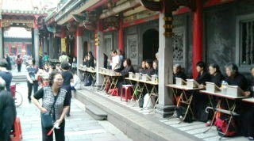

龍山寺（りゅうさんじ＝ロンシャンシー）は台北で一番古い仏教寺院（と云っても、道教やら儒教やらが入り交じっている）。古刹でもあるので、台北観光の目玉の一つになっている。
20年前に訪問したとき、上の地図の公園あたりは屋台街だった。屋台と屋台の間の３Mほどの通路は、ものすごい人出で人と人をかき分けて歩く感じだった。しかし今はすべて立ち退きとなり、キレイな公園になっていた。
正門も、昔はこんな感だった。
もちろん今でも この正門は残っているが、その前側に もう一つ 立派な門ができている。
門をくぐっって中に入ると、ちょうど お祭りの日。大勢の尼さんが渡り廊下に並んでお経をあげていた。

山の堂やら廟を一通り参拝したあと、表へ出た。すると新正門の脇に土産物の屋台が出ていた。腕輪やら首飾りやら耳飾りのようなものを いっぱい売っていたので、思い出話にと首飾りを一つ 買い求めた（正確な値段は忘れたが、たしか\1,000-くらい）。
その首飾りを胸にして、女房の記念写真をパチリ（キツイお達っしにより、顔面処理済み(笑)）。
帰国してから、その首飾りは他の小物と一緒に その辺りに飾っておいた。それから１ト月ほど経ったある日、何気なく新聞を見ていると 同じような首飾りの広告が載っていた。

なんとまぁ、売値 ５万円だと！(゜０゜) わざわざ輸入して売る手間があるとしても、千円と５万円では値が違いすぎる。ビックリしたので飾ってある首飾りを取り出し、しげしげ眺めてみた。すると買ってきた首飾りには、一部が欠けた石があった。
どうやら造っている最中、ヒモを通す穴が欠けてしまったらしい。そうか、それで欠陥品として屋台店に卸されたのか。しかし欠け石といっても、よく見ないと分からない。別に首飾りとして使うつもりもないので、σ(-_-)としてはノープロブレム。ただし広告文には「人々を守護し、満貫をもたらす霊力（広告文）」とある。欠け石製品では その霊力は無いかも...(>_<)
|